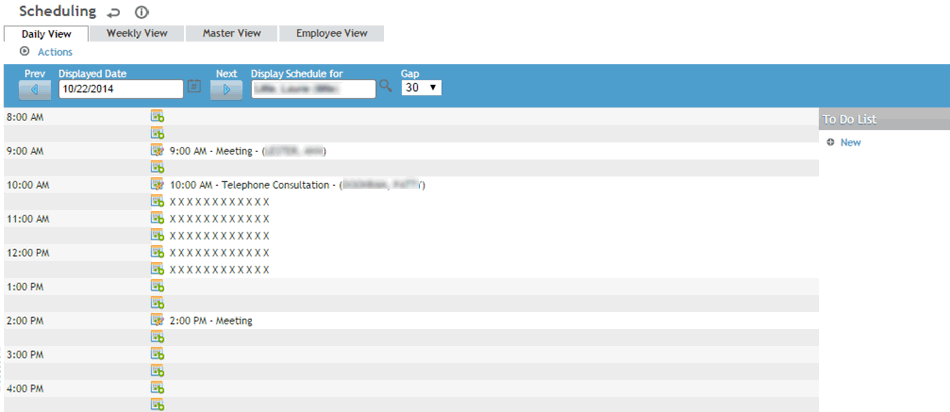
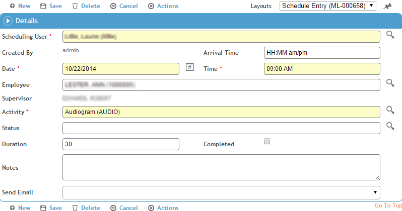
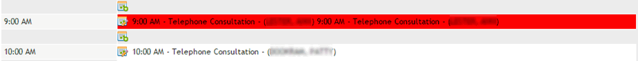
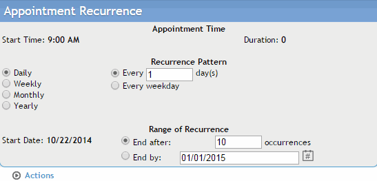

You can schedule activities in any of the schedule views.
Maximize your productivity by taking advantage of the features described after step 9 to schedule different activities and schedule users without re-entering data.
In the Occupational Health menu, click Scheduling.
Select the scheduling user from the list. The user’s standard work hours are highlighted, if defined in their Schedule Availability (see Setting Up Your Schedule).
By default, the current date’s schedule displays in Daily View. Daily view shows both the employee name and activity in the schedule.
To see a week at a time, starting with the date selected, open the Weekly View tab.
Select whether you want to see employee names or activities in the schedule.
To see the schedules of multiple users at the same time, open the Master View tab and select the users whose schedules you want to view (if they weren’t populated from your Schedule Availability form (see Setting Up Your Schedule).
Select whether you want to see employee names or activities in the schedule.

To schedule an activity for a different date, navigate to the date using the arrow or calendar buttons beside the date field.
The schedule shows each hour divided into 30-minute intervals. This default gap is defined in the system settings (see Changing Your System Settings); to change the interval periods just for this user, choose a different interval from the Gap list. For example, select 10 to divide each hour into 10-minute intervals.
Changing the size of the interval affects only the display. You can schedule an activity for any period of time.
By default, the Daily and Weekly views show all your available times, as defined in Setting Up Your Schedule. The Master view shows from the earliest to the latest available times for the selected default providers.
To hide the unavailable time slots, choose Actions»Hide Unavailable Times.
Click the button beside the time interval in which you want to schedule the activity. For example, click the button next to the 9:00 a.m. interval.

To copy an existing schedule entry, open the entry and choose Actions»Copy, choose the employee name, and change any of the other details as required.
Enter data in the fields of the Schedule Entry form and save your entries. The fields are self-explanatory, but note that:
When a scheduling user who is not a practitioner opens the activity list, it will be limited to activities marked (in the ScheduleActivity look-up table) as Non-Medical Activity and whose Type is not “Exam Activity Only”.
The Status field indicates whether the employee for whom the activity was scheduled failed to arrive (no show), arrived or rescheduled.
The text of the activity in the schedule frame is shown in different colors depending on the activity status. The color for each activity status can be configured in the ScheduleStatus look-up table.
If the test was completed on the scheduled date in an external module, e.g. an audiogram was marked as complete in the Audiometric Testing module, the Completed checkbox is automatically selected.
To send an email notification about this appointment, choose Actions»Send Email including Activity and Notes (or Actions»Send Email Including Activity as Clinic Visit and Excluding Notes if you want to omit the reason). Three new checkboxes appear, allowing you to indicate who should receive the email (the Scheduling User, Employee, and/or Supervisor). The email(s) are sent once upon the initial save of the appointment. These emails are treated the same as regular appointment requests - the recipient(s) can accept the request directly into their day-planner program (such as Outlook or Lotus Notes), or reject the appointment request. To resend the email(s) later, or to send an email to a recipient who was not selected earlier, select the appropriate recipient(s), then choose Actions»Send Email including Activity and Notes; the email is sent to the recipients whose checkboxes are selected at that moment.
You can send a reminder letter instead of, or in addition to, an email notification or To Do list reminder: choose Actions»Generate Reminder Letter. For more information, see Generating a Letter.
When scheduling recall activities such as a second immunization, you can link directly to modules that are associated with the recall activity. To link to an associated module, choose Actions»Link. A data entry form for the module you’re linking to opens. For example, if you select Immunization as the activity, the entry is linked to the Immunizations form. Activities and the modules they are linked to are defined in the ScheduleActivity look-up table.
If the selected status code is defined with the Arrived checkbox selected (in the ScheduleStatus look-up table), the arrival time is carried over to the Clinic Visit when linked to from Scheduling.
If the activity’s reference type is Clinic Visit, you can also link the activity to the employee’s clinic visit list -- choose Actions»Link to Clinic Visit List.
If more than one activity is scheduled for the same user at the same time, the time interval is highlighted in red.

To reschedule the conflicting activities, click the button to the left of the time interval and edit the Schedule Entry form.
To set up recurring appointments for the same patient and activity, choose Actions»Recurrence (this button appears when you save data).

Select the frequency of occurrence - Daily, Weekly, Monthly, or Yearly. The pattern options will change depending on the frequency option selected. To clear your settings, choose Actions»Return to Default Settings.
Specify how long the recurring appointments should last (either a specific number of occurrences, or an end date).
When you are finished, choose Actions»Create Recurrence Appointments. The recurring appointments will appear in the schedule according to the frequency pattern specified.
To schedule another activity for the same user, click New. All information other than the name of the user and the date is cleared from the screen. The original entry is automatically saved.